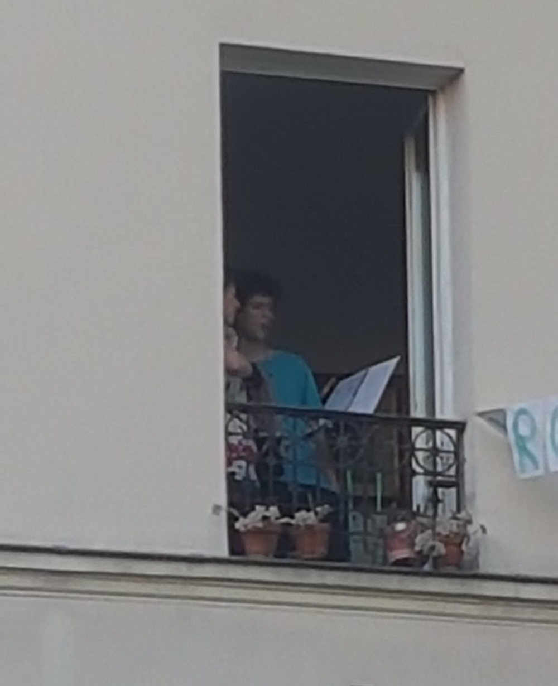
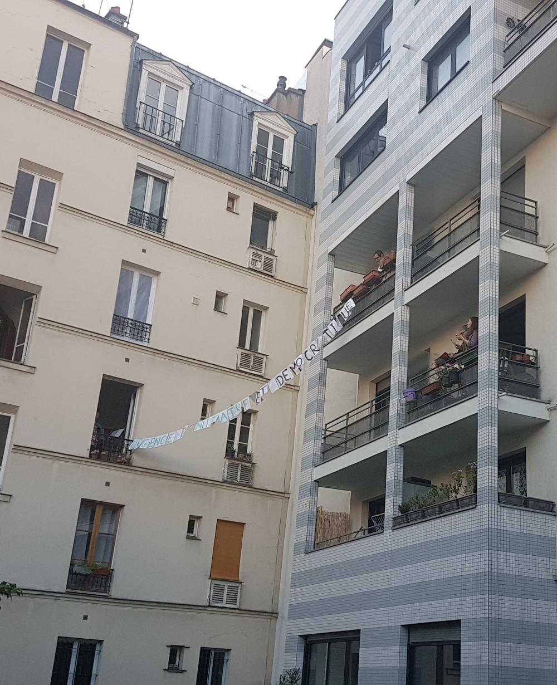

27 avril
La chanson de ce soir : La Mauvaise réputation
Au moment de sa sortie en 1952, la chanson a été interdite d'antenne, mais heureusement on peut aujourd'hui chanter librement ce qu'on veut dans notre cour d'immeuble !
Les paroles par ici, la musique par là.
Les photos d'hier :
Merci à Catherine pour nous avoir envoyé ces photos :
 Et voici une vidéo de la chanson d'hier, la javanaise :
Si vous avez des vidéos, des photos, ou des enregistrements, n'hésitez pas à les envoyer à blogdesvoisins@gmail.com !